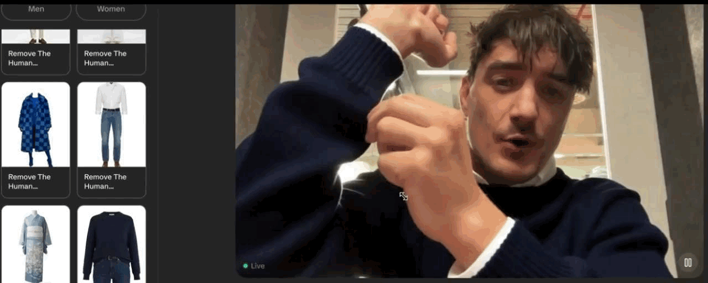
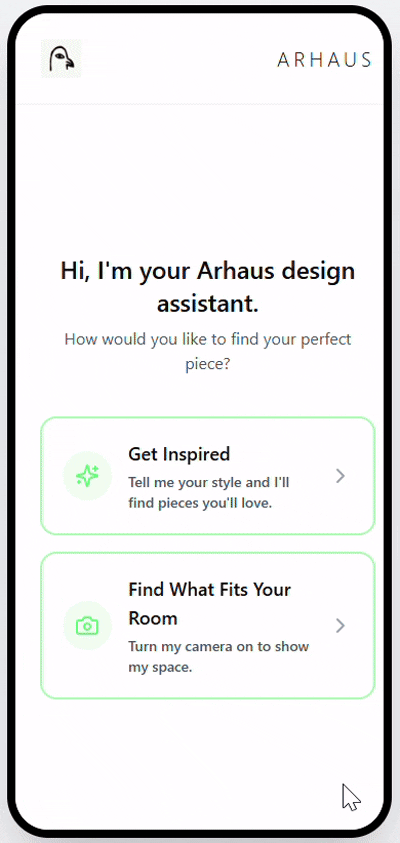
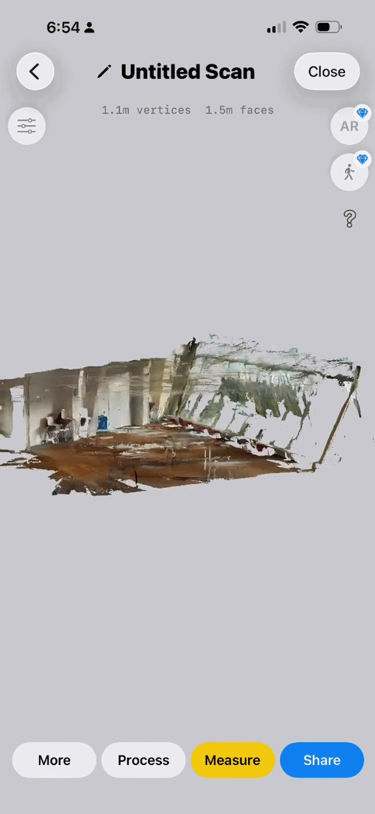
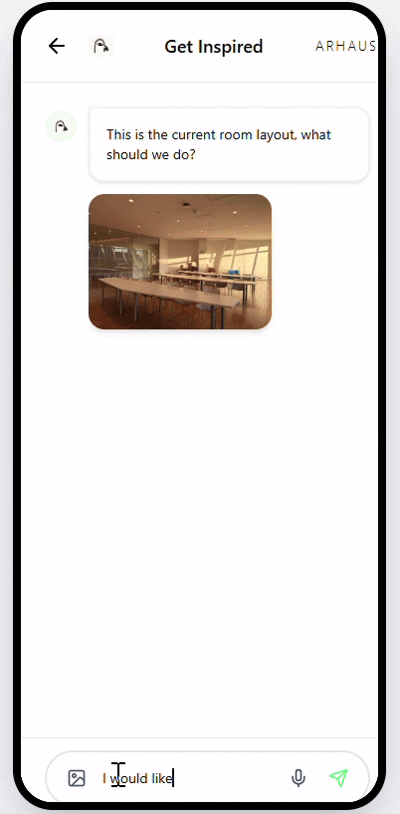

SWAP: Vertical Expansion Strategy for Agentic Commerce.
A go-to-market and prioritisation framework for SWAP Commerce — mapping which verticals to enter, in what order, and why home goods is the highest-conviction first move.
For thirty years, e-commerce was a digital catalogue.
SWAP is turning it into a world-class salesperson. The challenge: which verticals should SWAP expand into next, how should they be prioritised, and what are the creative use cases for this agentic commerce technology?
Three verticals on the table.
We evaluated three candidate verticals — each with meaningful guided-selling potential and different risk-return profiles.
We spoke to real practitioners across all three: an Instacart VP of Research, a Miss Universe Indonesia who is also a medical doctor, and a professional interior designer. Their input shaped our entire framework.
The Momentum Framework.
We built a structured scoring matrix across six criteria to cut through intuition and evaluate each vertical on what actually drives GTM success for an agentic commerce platform.
| Criterion | Home Good | Medicine | Grocery |
|---|---|---|---|
| Guided selling need | High | High | High |
| Market opportunity | $500B | $270B | $650B — narrow margins |
| AOV & net margin | AOV $95–$295 · ~$25–$35 net/order | AOV $45–$1,500+ · ~$10–$375 net/order | AOV $45–$147 · ~$0.50–$3 net/order |
| Strategic fit / SWAP tech reuse | Strong | Strong | Moderate / Strong |
| Rollout feasibility | Fastest | Moderate — OTC-first wedge | Moderate to slow |
| Competitive defensibility | High | Medium / High | Low / crowded |
The verdict: sequence matters.
Not all verticals are equal — and timing is strategy. We recommended a phased approach anchored on proof-of-value before regulatory complexity.
The Red Ocean: a mature battlefield of efficiency.
- Recipe-to-cart friction
- Budget and dietary constraints
- Substitution handling
- Household coordination
- Replenishment
- AI meal planner agent with budget awareness
- Smart replenishment subscription
- Social/community commerce layer
Regulated Blue Ocean: a frontier of trust.
- Huge need for in-depth consultation
- Long, uncertain decision-making
- Ambiguity on dosage and treatment
- Self-service information gap
- Can't visualise what weight loss looks like
- Conversational decision support
- Orthodontics/braces planning
- Cosmetic surgery preview
- Injectables (Botox) visualisation
- OTC/wellness conversational support
High Urgency Blue Ocean: the logical evolution of spatial fit.
- Spatial uncertainty: size and room mismatch
- Colour and material mismatch
- Style coherence gap
- Renovation blindspot
- Cross-border duty complexity
- Inspirational showroom (live video to cart)
- Room-planning agent + AR/3D VTO
- Cross-border/relocation support
- Home renovation mid-build flow
- B2B: hotels and architects
What SWAP delivers for Home Good.
Home Good Agentic Journey: End to End Orchestration.
Inspiration


Convincing

Consideration

Purchase & Logistics

Win 10 brands. Then 100. Then 1,000.
A land-and-expand motion anchored on proof with high-signal home goods brands before scaling to the broader platform.
Land with Wayfair-tier brands
Target 10 high-AOV home goods brands with documented return and abandonment problems. Deliver measurable conversion lift within 90 days.
Build the proof base
Use live data from initial brands to anchor the sales motion — conversion rates, return reduction, and decision time as the core commercial narrative.
Make elite commerce tech available for everyone
Expand to 100, then 1,000 brands. The same agentic technology that powers enterprise becomes accessible at every tier of the market.